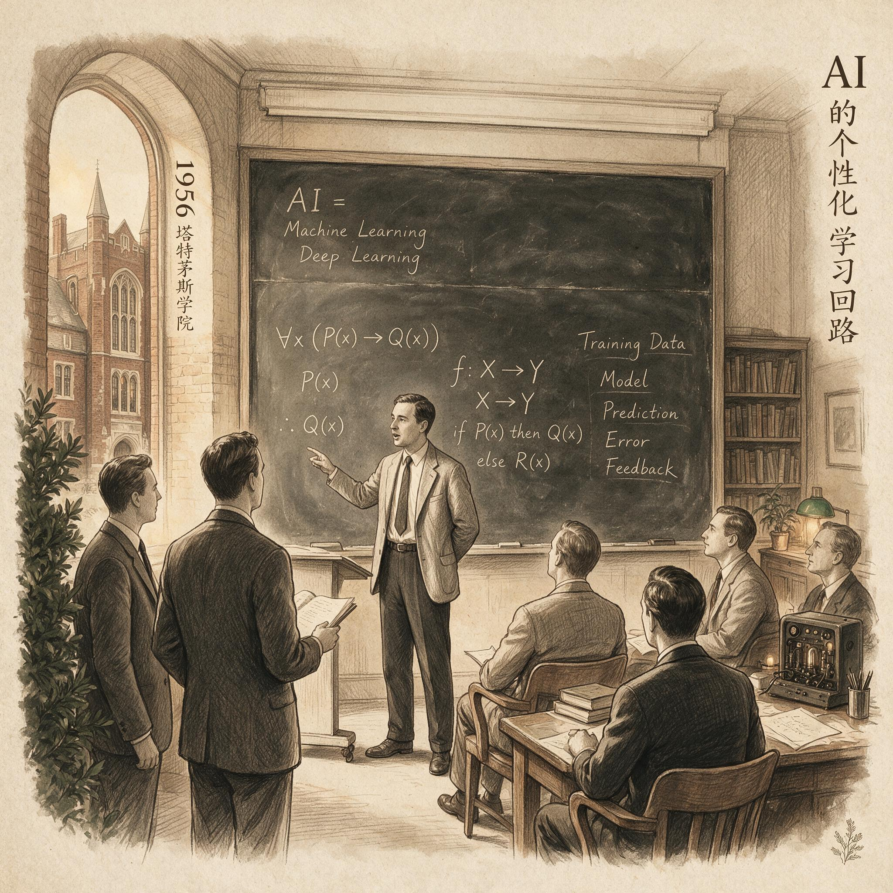

第 14 章
社会压力下的回路变形
有些事情，本质上是不可加速的。这不是一个技术判断，而是一个数学事实。1972年，理查德·卡普基于史提芬·古克在前一年提出的理论，证明了一类问题的共同命运：它们的求解时间随输入规模的增加呈指数级增长。输入翻一倍，时间不是翻倍，而是平方、立方地暴涨。在理论上，这类问题存在精确解。但在真实世界中，当输入规模超过一个相当有限的阈值，任何计算机都等不到答案——不是因为机器不够快，而是因为宇宙的寿命不够长。这一数学边界，与人工智能早期研究者们所遭遇的困境遥相呼应：他们很快发现，许多看似简单的任务，如人脸识别或穿过屋子，实现起来却极端困难，这便是著名的莫拉维克悖论。
学习的某些核心环节，恰好属于这一类问题。一个人要学会用第二语言写出有论证力度的段落，需要反复经历一个不可压缩的循环：把模糊的想法推敲成文字，让文字暴露自己理解中的裂缝，在裂缝处停下来追查原因，修补之后进入下一轮暴露。这个循环的每一步都有其认知加工上的必要性。你可以借助工具让单步更快——查词典可以快过翻纸质词典，搜索例句可以快过翻语法书——但你无法跳过步骤本身而不损害最终的结构。就像用指数级算法的近似解代替精确解：表面数值接近，但只要边界条件一变，整个结果就会无声地瓦解。
但这道数学边界在一个人的私密学习空间里还是可以被尊重的。一个人独自坐在电脑前，面对AI的修改建议，至少有可能做出这样的选择：不采纳那条自己尚未理解透的建议，保留自己笨拙的版本，让错

误继续暴露在注意力之下。这个选择不会带来任何即时的社会后果。没有人会在旁边比较，没有排名会因此下降，没有点赞数会因此减少。
一旦这个人的学习回路被暴露在同伴、教师或职场评价的目光下，情况就变了。社会压力像一种溶剂，它能够溶解那些本该维持紧张状态的认知环节。原本服务于“学会”的输出和反馈，在群体注视下被重新定义：输出变成表演，反馈变成裁判。回路没有断裂——这恰恰是最麻烦的地方——它继续运转，但它传输的信号被掉了包。
为了让你在自己的认知系统里看到这个置换是如何发生的，我们可以先从一个小型自测开始。
请设想一个具体的任务：你需要用英文写一篇约两百词的短文，论述一个你关心的话题。你写完初稿后，将初稿提交给一个AI辅助工具。工具返回了六条修改建议，其中一条涉及一个复杂句的重写方案——它建议你把三个短句合并成一个流畅的长句，用了一个你今天刚刚学到、还不太能熟练使用的连接词。AI在建议下方附了简要的语法说明，解释了为什么这个连接词在此处比原文的简单连接更精确。
现在分两种情境。第一种情境：系统明确告诉你，这次交互的全过程——包括你的初稿、AI的每条建议、你最终采纳了哪些、拒绝了哪些——只有你一个人可以看到。这些数据的唯一用途是帮助你追踪自己的进步。第二种情境：系统明确告诉你，完成修改后，你的初稿和AI的建议记录将被匿名展示给学习小组的其他成员。每个人将对你和其他人的终稿进行互评，评分维度包括“终稿的语言质量”和“修改的合理性”。互评排名将公开。
请诚实地问自己：在第二种情境下，你对待那条长句重写建议的方式，会不会发生变化？
我们之中的绝大多数人，在第二种情境下会更倾向于直接点击“采纳”，而不是停下来读那行语法说明。原因出奇简单：说明读不读没人看得到，但句子干净不干净一眼就能被看见。而且还有一个更微妙、更普遍的心理计算：如果你预估其他人大概率都会直接采纳AI的润色，而只有你坚持保留那些你没吃透的语法点、让你的终稿读起来有些“生涩”，那么在匿名互评的排名里，你会毫无必要地落后。这不是一个关于道德自律的决定，这是一个关于社会风险的计算。
这个自测没有标准答案，也不应该有。它的唯一功能是让你在自己身上观察到一件事：社会评价压力的存在本身，就可以改变一个学习者对认知加工深度的自发选择。认知心理学里有一个概念叫“认知吝啬”——人类大脑天然倾向于选择耗能更低的加工路径，这是演化赋予我们的节能本能。在独自学习时，我们还能调用元认知来对抗这种本能：告诉自己“这个地方慢下来是有益的”，“这个错误值得被仔细看”。但在群体评分的情境下，对抗本能的成本被显著抬高了。你不仅要多花时间，还要额外承担“在群体排名中看起来更差”的社会风险。
AI工具的两个特性，大幅放大了这种社会压力对认知吝啬的激活效应。
第一个特性是AI生成内容的流畅性。一段经过AI润色的英文，读起来可以直接对标受过高等教育的母语者。而一个学习者在自己的理解边界上挣扎、坚持只用自己确认过的表达写出的段落，读起来会有些跌撞——某个定语从句的位置不够自然，某个过渡词的语气有些别扭。如果评价标准是“文本的表面质量”，前者几乎一定会赢。但前者赢的是最终产物的外观，不是写作者被扩展了的内部能力。这两者之间的差距，就是被短路掉的认知加工——那些只有在挣扎中才会发生的神经连接，没有发生。
第二个特性是AI响应的即时性。在AI出现之前，一个想要走捷径的英语学习者也并非无计可施：可以找一篇范文，模仿其结构，替换关键词。但这种操作仍然需要时间成本——至少要读懂、分析、改写。而AI可以把一份逻辑完整、表达地道的英文论述在几秒钟内直接交付。这种即时性让“表演”变得几乎零成本，同时让“不合群地坚持自己写”的成本在对比中显得更刺眼：别人十秒钟完成的东西，你需要磨半小时，磨出来的东西还明显不如别人的流利。
要看清这种压力是如何在实际的学习环境中发生作用的，我们需要把分析单位从“一个人”换到“一组人”。单独有效的学习回路，在进入真实课堂或学习社群后往往变形，不是因为学习者个体的意志力突然变弱了，而是因为群体评价的规则接管了回路中的关键信号节点。
第一个案例发生在一门大学英语写作课上。全班二十三名学生被要求使用同一套AI写作辅助工具。这套工具的设计理念是合理的：它会标注语法和表达问题，给出修改建议，每条建议附有简短的语法解释，学生可以选择“采纳”、“拒绝”或“请求进一步解释”。教师明确告知全班：使用AI工具的目的是帮助大家识别自己的写作弱点，从而进行针对性改进；期末评分的主要依据是整个学期的进步幅度，而非单次作业的表面质量。
但学期中的一次匿名互评活动改变了许多人的行为。规则是这样的：每位学生的作文初稿、AI给出的逐条修改建议、学生最终采纳了哪些建议——这三层信息被并列展示在屏幕上。全班学生匿名对其他人的终稿进行打分和评论。评分的第一个维度就是“终稿的整体语言质量”。第二个维度是“修改的合理性”，但这个维度在实际操作中被第一个维度严重挤压——评审者在快速浏览二十多份作业时，自然倾向于先被终稿的“干净程度”抓住注意力，然后以此锚定整体印象。
两位学生的作业在系统里被排在相邻的位置。
学生A采取的是“最高加工难度”的策略。他只采纳那些他完全理解的AI建议。如果某条建议涉及一个他尚未掌握的语法点——比如一个他在阅读中见过但从未在自己写作中使用过的虚拟语气结构——他不会点“采纳”。他会点“请求进一步解释”，阅读AI给出的说明，然后尝试用自己的话重写这个句子。他重写后的版本在流畅度上仍然不如AI原始建议那么自然，介词搭配有些生硬，时态呼应也略显紧张。但这种“不够自然”和“略显紧张”，正是他在那个语法点上当前真实能力水平的指纹。
学生B采取的是完全不同的策略。他逐条采纳了AI所有的润色建议。遇到不理解的建议，他不回退、不追问，直接采纳。他的终稿干净、流畅，在宏观节奏和微观措辞上都达到了母语者的水准，几乎没有任何可见的语法瑕疵。
互评结果毫无悬念。学生B的终稿在“整体语言质量”上拿到了压倒性的高分，评论区出现了“表达很自然”、“几乎没错误”、“读起来很舒服”这些评价。学生A的终稿则收到“有些地方读起来别扭”、“语法还需要加强”、“感觉还比较初级”的评论——尽管事实上，A的语法准确性在他的个人起点上已经发生了实质性的提升。这个提升就藏在他保留的那些“不完美”里，但互评系统没有为这个维度留下任何能见度。
真正的转折发生在互评之后。系统后台记录到了一个清晰的行为变化：在互评之前，班级里大约有八位学生采取了类似A的策略——在AI建议弹出时习惯性地停顿阅读解释、手动修改、保留自己未完全掌握的表达。互评之后，其中五位学生的“直接采纳”比例在下一轮作业中大幅上升，他们在AI解释页面的平均停留时间同步下降。他们的终稿变干净了，互评分数上去了，但这恰恰是回路被扭曲的症候——更干净的终稿掩盖了更浅的加工。
为什么一个匿名互评就能改变学习行为？不是因为这些学生“不想学习了”，而是因为评价体系用了一个看似中性的标准——“终稿质量”——替代了学习回路中的核心反馈信号。在理想回路中，反馈的意义是告诉你“你哪里还没掌握”、“你下一步该练什么”。但当终稿质量成为群体中可见的排名依据，反馈的意义被偷换为“你在别人眼里看起来如何”。在这个被置换的定价体系里，学生A的行为——坚持暴露自己尚未内化的语法点——不再是“高效学习”，而变成了一种让自己在群体中承受排名惩罚的非理性固执。
想象你是这个班级里一名原本坚持高加工难度的学生。你每天看到坐在你旁边的同学用你一半不到的时间完成作业，然后在匿名互评中拿到你两倍的分数。你付出的额外努力——那些手动修改的试错、那些反复阅读解释的停顿——在评价表上不留任何痕迹。你会坚持多久？这个问题不是一个道德考题，它指向的是一个冷冰冰的制度现实：群体的评价标准一旦与学习的内部标准脱钩，高加工难度的行为就会在重复的社会反馈中被系统性地淘汰。
第二个案例发生在一个线上英语学习社群里。这个社群的主题是“用英语输出你的思考”，成员每天在打卡区发布一段自己用英文写成的思考，领域不限，长度不限。社群倡导的核心文化是：“写作是逼自己把模糊的想法变清晰的过程，不要怕犯错。”但社群同时运行着一个积分系统：每日打卡获得基础分，每获得一个点赞或一条评论获得附加分，每周积分前三名被授予“优质输出者”徽章，徽章获得者在群内的发言会被高亮显示。
一位学习者C在这个社群里坚持了两个月。他的工作流是这样的：先确定当天想写的一个观点，用中文写出核心论证；然后用英文自己写一遍，遇到不确定的表达就查词典、翻阅自己积累的例句库；写完之后，对明显存疑的部分，他使用AI工具进行定向询问——“我这句话的时态使用对吗？”或者“这里用which和用that有区别吗？”
AI指出错误后，他会读解释，然后用理解后的方式重写整个句子，而不是只替换# 个出错的单词。按这个节奏，C每天在打卡上花费四十到六十分钟。他的英文输出有明显的语法误差，句式以简单句和and-but连接为主，从句使用谨慎但偶有嵌套失误。
但是，他在两个月内的进步是可见的：从最初只能写六到七句话、前后逻辑连接靠暗示，逐渐发展到能写出十二到十五句话、有基本递进结构的段落。
然而C注意到了一个现象。社群中另一位学习者D的打卡内容，其语言精致度远超群内所有人——精准的措辞、灵活的句式变换、恰到好处的学术词汇。D的每条打卡都能稳定收获数十个点赞和大量评论，“太强了”、“这英文水平我要学十年”、“向大神学习”这类互动持续不断。D每周以绝对优势位居积分榜首，徽章从未旁落。
C起初的自我解释是：D的基础可能本来就很好，不能简单比较。但一次偶然的群内互动中，D在回复一条关于“如何高效打卡”的提问时，无意中透露了自己的工作流：先用中文想出大致内容，然后把中文喂给翻译型AI工具，让AI生成一段高质量英文论述，自己稍作浏览调整后，直接复制粘贴到打卡区。
C随即面对一个具体的选择。如果他也采用D的操作方式，时间成本可以从六十分钟压缩到十分钟以内，输出质量可以跃升到群内前列，互动数据和积分的激励触手可得。如果他继续坚持原来的方式，他的英文输出将永远“看起来像初稿”——不是因为他没有进步，而是因为他的进步发生在加工深度上，而非表面流畅度上。在D的AI生成文本旁边，他亲手写出来的段落看起来永远是笨拙的。
C选择了后者。但他的理由不是道德层面的自我约束。他后来在一次私下交流中给出了一个更准确的描述：他说他意识到，一旦自己开始把AI生成的文本习惯性地当作“自己的输出”展示给社群，这个行为会逐渐模糊他对自身真实能力的感知边界。“AI能写出好英文”和“我能写出好英文”是两件完全不同的事，但在社群打卡这个表演场域里，两者的外观是相同的，收获的社会反馈也是相同的。人脑有一种节省能耗的本能，它会逐步把这两种能力混在一起储存——而当你需要在没有AI的时候真正开口说英文或写英文时，那个混淆会在第一秒就断裂。
C在半年后的一次线上英语讨论会上亲历了这种断裂。他准备充分，话题是他熟悉的领域。
但当讨论进入需要即兴回应的段落时，他发现一个令他冷静的事实：那些在他的打卡帖里“看着很顺”的表达，那些他曾经在自己的手写初稿里挣扎过、最终用自己的理解重写出来的句子，在口头输出中仍然不流畅，但至少有一个可追溯的起点——他知道问题出在哪，下一次可以瞄准这个问题再练一次。而那些他从未在加工层面接触过的、只在别人或AI的输出里见过的高阶表达，在需要自己调用的瞬间，就像从未存在过一样消失得干干净净。
他被卡在两种差距之间：一个是“AI可以写得很好”和“我自己写得很吃力”之间的差距，另一个是“我能写出来”和“我能说出来”之间的差距。前一种差距被社群打卡的表演轻易遮盖了，后一种差距只有在真实输出的压力下才会现形。
这两个案例共享一套底层机制。在班级环境中，匿名互评的排名系统把“学习的可见产出”重新定价为“表演的可见质量”。学生A的额外加工——暂停、追问、手动重写——在终稿的表面质量上无法体现，反而会因为在互评中得分偏低，被系统标记为“低效行为”。学生B的跳过加工——直接采纳、不追问、不重写——却因为在终稿的表面质量上表现出色，被系统标记为“优质输出”。回路中的反馈信号被弯曲了：系统告诉A“你不够好”，告诉B“你很出色”，但这句话的真实含义是“你的终稿外观不够好”和“你的终稿外观很出色”。学习者读到的却是“你的学习方式不对”和“你的学习方式对了”。
在社群环境中，互动数据——点赞、评论、积分排名——将“输出”从学习回路的中间节点抬升为终点。当输出变成社交货币，学习者自然倾向于优化货币的外观，而非货币背后的真实储备。用AI生成高质量英文段落，就是以近乎零的加工成本制造高外观价值的社交货币。而那些用自己尚未成熟的能力挣扎输出的人，他们的货币外观价值更低，制造成本反而高出数倍。这个激励结构不只是在忽视深度学习，它在积极地对深度学习施加惩罚——惩罚的形式不是扣分，而是把坚持深加工的人在社交排序中不断往后排。
追问到这里，必须再下一层：为什么课堂互评系统会规律性地滑向奖励“表面质量”而非“加工深度”？为什么社群积分机制会规律性地诱导以AI生成内容替代自主输出？这不是个别教师或社群管理员的疏忽，而是一个结构性原因——社会性评价天然倾向于衡量“可快速比较的表面特征”，而学习真正需要的认知加工过程却是缓慢的、内在的、无法在单次横截面对比中被有效观测的。
在一个二十人的班级里，要评估一个学生的“加工深度”，评审者需要看的不是终稿，而是一整套行为序列：初稿写了什么，AI给出了哪些建议，学生在每条建议上停留了多久，学生点击了多少次“进一步解释”，学生手动修改的痕迹在哪里，修改后的版本与修改前的版本相比，在语法点的使用上发生了什么变化。要完成这样一次评估，需要的时间投入是简单地给终稿流利度打分的一百倍以上。任何一个依赖学生互评的课堂，都会因为评价成本的现实约束，自然滑向以终稿表面质量为主要的、实际起作用的评判依据。滑过去之后，学生的行为就会跟着走——这是人在制度中的理性适应，不是道德松懈。
社群的机制更隐蔽。点赞、评论、积分榜这些互动指标，初始设计意图是好的——降低参与门槛，提供持续输出的外部动力。但它们有一个几乎无法回避的副作用：它们把“输出”从学习工具变成了社交展示。当输出被赋予了社交货币的功能，社区成员面临的激励就从“我学到了什么”分裂为两个有时互相冲突的目标——“我学到了什么”和“别人觉得我学得怎么样”。后一个目标更紧急、更有形、更容易被立即满足，而前一个目标则更缓慢、更模糊、更容易在日常节奏中被推迟。当AI可以帮一个人以几乎为零的成本在后一个目标上拿到高分时，前一个目标的生态位就被严重挤压了。
再往下追问一层：为什么我们会本能地把“表达的流畅性”等价于“思维的清晰性”？这是一个更基础的认知偏误，它在AI时代之前就存在了。一个人在阅读一篇语法正确、词汇丰富、句式多变的英文文章时，会自动假设作者的思维也是清晰而有深度的。这个假设在人类写作的世界里大致成立，因为一个人要写出那样水平的文章，通常确实需要相当程度的思维训练和语言积累。
但AI生成的流畅文本打破了这条因果链。AI在一个高维语义空间里，基于概率分布，生成一串在统计学意义上最合理的词序列——它没有在某个论证的转折点卡住、推翻、重新组织，它从来没有“卡住”过。它只是输出。
当学习者把AI的输出作为“自己的输出”呈现给社群时，他们借来的是AI的统计合理性，而非自己思维的清晰度。围观点赞的人，赞的是那张借来的面孔。
面具被反复赞赏，被高亮显示，被授予徽章，而面具下面的面孔并未因此经历任何改变——这才是这个结构的深层反讽。
这种对“流畅性”的迷恋，与早期人工智能研究中“常识与推理”难题的根源同构：程序可以证明定理，但程序自己并不知道自己证明了定理；AI可以生成流畅文本，但生成过程本身缺乏对“卡住了”的体验与反思。
这两个案例所揭示的扭曲，在个体独自学习的情境中几乎不会发生。一个人坐在电脑前，没有同伴比较、没有互评排名、没有积分榜，没有点赞计数器在后台跳动时，他采纳AI建议的唯一真实动机是“我想搞懂这个东西”。一旦群体的目光接入，动机就被污染了——不是被恶意污染，而是被正常的社会性动机叠加上去。“我想学会”还在，但同时加入了“我不想在同伴面前显得差”、“我想要被认可”、“我不想在这个群体里被落在后面”。后面这些动机没有任何一个是错误或可耻的，它们是人作为社会动物的正常心理需求。但它们进入动机池之后，不可避免地改变了回路中的信息流向——从“暴露差距”转向“缩小差距的可见性”。
既然群体评价环境是绝大多数真实学习发生的土壤——学校课堂是群体的，公司培训是群体的，线上学习社群是群体的——一个人如何在这样的环境中守住自己的学习回路？直觉性的答案是“改变环境”：让互评标准从评终稿质量改为评修改过程的可解释性，让积分系统从奖励输出频率改为奖励反思深度。
这些方案在逻辑上成立，在少数试点中也见到过效果。但它们有一个共同的前提：你有能力改变评价规则。
而在大多数真实情境里，学习者是被规则评价的人，不是制定规则的人。一个需要用英文写工作邮件的员工，主管评估邮件质量的标准是“有没有拼写错误”、“表达是否清晰”、“对方能不能看懂”，员工不可能要求主管把评估标准改为“你这封邮件在哪个语法点上花了额外的加工时间”。
一个在备考群里打卡的学生，如果群里的主流气氛是秀进度、晒分数，他一个人坚持每天发错题分析和生涩的作文草稿，短期内不会改变群内文化，只会让自己被边缘化。
这就把问题推到了更根本的层面：如果环境本身不可控，一个人能做什么？答案不在于“改造全环境”，而在于“在回路中插入一道私有防线”。这道防线的功能不是屏蔽外部评价——外部评价在很多时候是有价值的，它告诉你真实世界对你当前能力水平的接受度——而是防止外部评价完全覆盖掉内部评价，防止社会反馈成为你认知自身学习状态的唯一信号源。
防扭曲机制的第一个动作，是在每次输出被外部评价之后，执行一个纯私人的三分钟核查。核查的内容很简单：这次输出中，哪些部分是我确定自己独立完成的？哪些部分我借用了AI或他人的帮助、但还没有内化为自己的能力？如果一周后、在没有AI的情况下，我需要就同一个话题再次输出，我能还原出多少？这个核查的产出不需要给任何人看，它的唯一功能是在你的内部认知地图上保留一份没有被外部奖励信号冲销的欠账清单。你在职场上为了效率用翻译工具跳过了某个语法点的挣扎，你不需要当晚就补回来，但你在核查中标记了它。这份标记本身，就是你的内部评价系统仍然在运转的证据。
第二个动作更基础：维护一个“社会评价风险为零”的练习空间。这个空间可以简单到无法再简单——一个不分享到任何群的私人文档，一个不上传的录音文件，一个不给任何人评分的草稿文件夹。在这个空间里，你唯一允许自己做的事情就是暴露——允许语法错误不加修饰地留在那里，允许逻辑断裂不粉饰地展示出来，允许表达卡顿不跳过。这个空间的作用是让回路中最关键的一环——暴露差距——维持运转。当真实课堂或职场中你不得不在社会压力下妥协时，你至少还有一个没有被污染的回路在并行运行。
这个策略听起来像是退而求其次的防御姿态，但它的逻辑基础很坚实：学习所需要的核心认知加工——在错误处暂停、追查原因、尝试修正、再次暴露——可以在社会表演之外并行发生。你在课堂上因为互评压力而直接采纳了AI的一条建议TRONG建议，这并不等于你永久丧失了掌握那个语法点的可能性。你只需要在当天的私人空间里，把那一条建议重新调出来，问自己三个问题：它为什么这样改？我原来的写法在哪种意义上是不准确的？下次我自己能不能写对？然后把答案用自己的话重写一遍。社会压力让回路在公共端变形了，但你在私有端把它重新接了回来。
这又引出了一个更难的问题。在日复一日的节奏里——在每天需要处理的邮件、每天需要提交的作业、每个周期的考核和排名中——一个人拿什么来持续支撑这些私有的追加加工？原则容易知道，但把原则嵌入日常，让它不依赖每一次都需要重新调动意志力就能自动运行，这才是尚未解决的落地难题。
我们在自测中体验到的那个瞬间——当被告知输出将被公开评分时，处理AI建议的方式立刻发生变化——揭示的不是一个个体的软弱，而是一个适用于所有群体情境的规律。社会评价压力不会消失。它在课堂上，在社群里，在办公室隔间里，在每一个试图深度学习的人的周围持续存在。
一个人可以拒绝把学习变成表演，但拒绝本身消耗认知资源和情感能量。防扭曲机制的真正对手不是某一次评价不公，而是日常的、重复的、低强度的消耗——那种每一轮都在“合群”和“较真”之间重新做一次选择的累积疲惫。
正因为意识到这种疲惫的力量，问题的重心才需要从“如何在单次博弈中获胜”转移到更底层：如何让那些被实验验证有效的原则，不再只是在理想条件下偶尔运转的精密装置，而成为在充满噪音和摩擦的日常中仍然能够持续运转的基础设施。